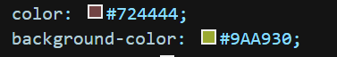
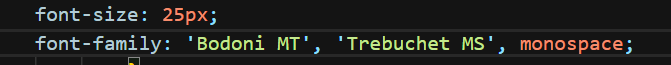

Aqui, você encontrará links para os exemplos de cores em Hexadecimal e tipos de Font-Family.
Conforme dito, é possível que você realize uma definicação de cor hexadecimal, igualmente na imagem abaixo. Para realizar isso, substitua onde normalmente você coloca a cor da foto, pelo código.

Para verificar diversos códigos, clique no botão abaixo, você será encaminhado.
Referente a formatação de fontes, usamos 2 constantemente:
Font-Size: Usado para definir o tamanho da fonte
Font-Family: Usado para definir o tipo de fonte
Ex:

Para verificar diversos tipos de fontes, clique no botão abaixo, você será encaminhado.